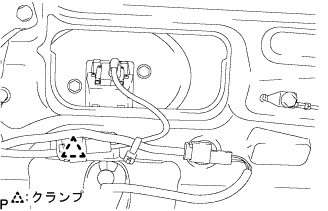
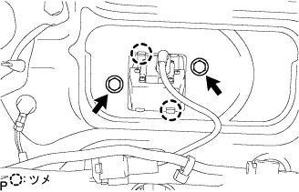
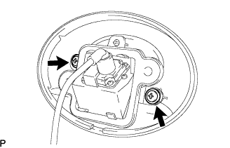

バックドア 分解 |
| 1. センタストップランプ カバー取りはずし |
 |
センタストツプランプカバーを①の方向に押して②の方向に引き、A部のツメのかん合2箇所を切り離す。
センタストツプランプカバーを③の方向に引き、クリップのかん合2箇所をはずし、センタストツプランプカバーを取りはずす。
| 2. センタストップランプASSY取りはずし |
クランプをはずし、センタストツプランプASSYのハーネスをセンタストツプランプブラケツトから切り離す。
 |
センタストツプランプASSYを①の方向に押して②の方向に回転し、B部のツメのかん合2箇所を切り離す。
コネクタをはずし、センタストツプランプASSYを取りはずす。
| 3. バックウインドウガラス チャンネル RH取りはずし |
クリップリムーバーを使用して、クリップ２個をはずし、バツクドアガラスチヤンネルＲＨを取りはずす。
赤外線ランプなどでドアに残った両面テープを暖める。
ボデーに残った両面テープをウエスなどでこすり取る。
| 4. バックウインドウガラス チャンネル LH取りはずし |
バックウインドウガラスチャンネルRHと同じ要領で取りはずす。
| 5. バックドアトリム ボード取りはずし |
 |
クリップ9箇所をはずし、バツクドアトリムボードを取りはずす。
| 6. リヤワイパ アーム ヘッドキャップ取りはずし |
| 7. リヤワイパ アームASSY取りはずし |
ナットをはずし、リヤワイパアームを取りはずす。
| 8. リヤワイパモータ グロメット取りはずし |
 |
リヤワイパモータグロメツトを取りはずす。
| 9. リヤワイパ モータASSY取りはずし |
コネクタを切り離す。
 |
ボルト3本をはずし、リヤワイパモータASSYを取りはずす。
| 10. バックドア ロックASSY取りはずし |
コネクタを切り離す
ボルト3本をはずし、ロックASSYを取りはずす。
| 11. バックドア アウトサイド ハンドルASSY取りはずし |
ドアエレクトリカルキースイツチのコネクタを切り離す。
スクリューをはずし、バツクドアアウトサイドハンドルASSYを取りはずす。
スクリューをはずし、バツクドアアウトサイドハンドルASSYからドアエレクトリカルキースイツチを取りはずす。
| 12. テレビジョンカメラASSY W/テレビジョンカメラワイヤカバー取りはずし（バックガイドモニターシステムあり） |
|  |
コネクターおよびクランプを切り離す。
|  |
ボルト2本とツメ2箇所をはずし、テレビジョンカメラASSY W/テレビジョンカメラワイヤカバーを取りはずす
| 13. テレビジョン カメラASSY取りはずし（バックガイドモニターシステムあり） |
|  |
スクリュー2本をはずし、テレビジョンカメラASSYを取りはずす。
| 14. ドア プルハンドル取りはずし |
 |
ツメのかん合をはずし、ドアプルハンドルを取りはずす。